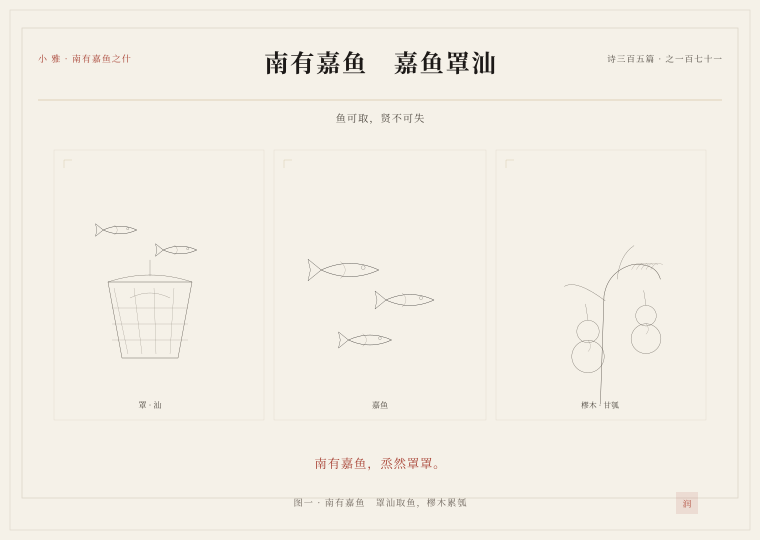
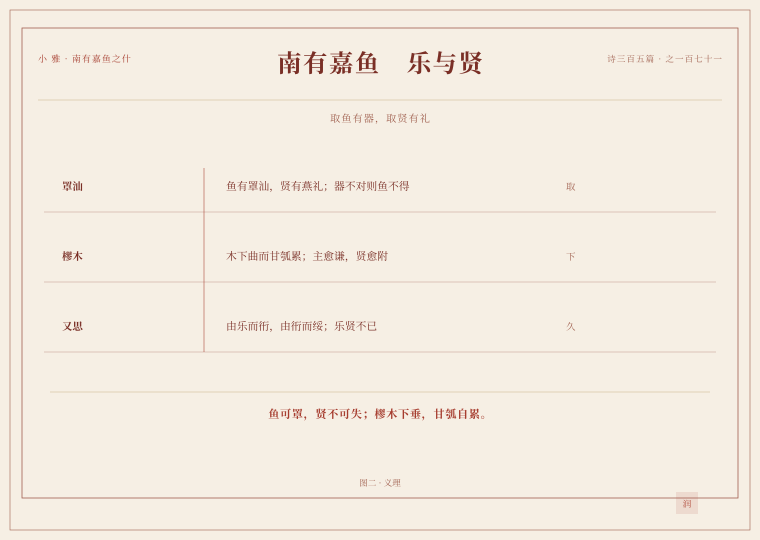

第一百七十一篇 南有嘉鱼
小雅 · 南有嘉鱼之什 SJ171
朗读 · 普通话
依经文原文朗读，章次不读出；配古琴底乐，不改速、不加拖腔。全库同一音色（豆包 TTS），非播音员录制。
一 解题
诗三判：
- 谁在说：宴宾之主。南有嘉鱼，或以罩取，或以汕取；君子有酒，嘉宾燕乐。
- 说什么事：四章。前二章以鱼起，写「罩罩」「汕汕」；三章以樛木甘瓠起，写「累」；四章以鵻鸟起，写「来思」。
- 为何编在此：鹿鸣之什终，南有嘉鱼之什始；前什燕嘉宾以礼，此什乐贤者以诚。
小雅由礼入乐，由乐入贤。
《毛序》：「《南有嘉鱼》，乐与贤也。太平君子至诚，乐与贤者共之也。」
朱子《诗集传》：「兴也。嘉鱼，鲤质鳟鳞，肌肉甚美。罩罩、汕汕，皆捕鱼之器。樛木，木下曲也。甘瓠，瓠之甘者。累，系也。绥，安也。鵻，鹁鸠。又，复也。」
本库的看法：《南有嘉鱼》不是一首宴饮诗，是一首「以取鱼喻取贤」的诗。
鱼在水，罩之汕之；贤在野，礼之乐之。樛木下曲，甘瓠自累；木愈下，瓠愈上；主愈谦，贤愈附。
末章鵻鸟「烝然来思」，是贤者自来，不是强致。须辨：罩、汕是两种取鱼器，不是鱼名；樛木是下曲之木，不是枯木；甘瓠是瓠瓜，不是葫芦泛称；绥是安，不是绥靖；又思是再思、复来，不是又想念。断语：鱼可罩，贤不可失；樛木下垂，甘瓠自累。
先辨五事：「罩」「汕」是取鱼之器，不是鱼名；「樛木」是下曲之木，不是枯木；「甘瓠」是甘瓠瓜，不是葫芦泛称；「绥」是安，不是绥靖；「又思」是再来、复思，不是又想念。
二 经文
第一章
南有嘉鱼，烝然罩罩。君子有酒，嘉宾式燕以乐。
第二章
南有嘉鱼，烝然汕汕。君子有酒，嘉宾式燕以衎。
第三章
南有樛木，甘瓠累之。君子有酒，嘉宾式燕绥之。
第四章
翩翩者鵻，烝然来思。君子有酒，嘉宾式燕又思。
三 韵读
- 一章：鱼、罩、酒、乐，鱼、药相叶。声乐。
- 二章：鱼、汕、酒、衎，鱼、元相叶。声安。
- 三章：木、瓠、酒、绥，侯、鱼交错。声柔。
- 四章：鵻、思、酒、思，之部相叶。声远而重复。
读法：四章皆「君子有酒」，只换「乐、衎、绥、又思」。乐在声，衎在安，绥在定，又思在久。
一章进一章，不是重复。
四 字义与名物
- 嘉鱼：美鱼。烝然：众多。罩罩：以罩取鱼，重沓。君子：宴主。式燕：宴饮。乐：欢。
- 汕汕：以汕取鱼。衎：安乐。
- 樛木：下曲之木。甘瓠：甘瓠瓜。累：系、缠绕。绥：安。
- 鵻：鹁鸠。来思：来。又思：再来、复思。
五 今译
一章：南有美鱼，众多地用罩取。君子有酒，嘉宾宴饮而乐。
二章：南有美鱼，众多地用汕取。君子有酒，嘉宾宴饮而安。
三章：南有下曲之木，甘瓠缠绕其上。君子有酒，嘉宾宴饮而安。
四章：翩翩的鵻鸟，众多地飞来。君子有酒，嘉宾宴饮而再来。
六 章旨
- 一章：嘉鱼罩罩，是「得鱼」；燕以乐，是「乐贤」；取鱼有器，取贤有礼。
- 二章：嘉鱼汕汕，是「得鱼」；燕以衎，是「安贤」；乐而不安，贤不留。
- 三章：樛木甘瓠，是「下接」；燕以绥，是「定贤」；木下曲，瓠自累。
- 四章：鵻鸟来思，是「自来」；燕又思，是「久贤」；贤自来，不来则礼虚。
七 诗教
- 取贤如取鱼：鱼有罩汕，贤有燕礼；器不对，鱼不得；礼不对，贤不至。
- 谦下如樛木：木不下曲，瓠无所累；主不谦，贤无所附。
- 乐贤不已：由乐而衎，由衎而绥，由绥而又思；乐贤不是一次宴，是长久不忘。
八 分寸与边界
- 不把「罩汕」读成鱼名：是取鱼器；读成鱼，则「嘉鱼」下无器。
- 不把「樛木」读成枯木：樛木是下曲；读成枯，则「累」无生意。
- 不把「甘瓠」读成葫芦泛称：甘瓠是甘者；泛称，则「甘」字落空。
- 不把「绥」读成绥靖：绥是安；读成政治，则宴礼失。
- 不把「又思」读成又想念：是再来、复思；读成想念，则「来思」无着。
九 存疑
- 诗旨：毛序「乐与贤」，朱子从之；一说燕嘉宾。本库从乐贤，兼取燕礼。
- 「罩罩」「汕汕」：毛传「罩罩，籗也；汕汕，樔也」；朱子「皆捕鱼器」。从器。
- 「樛木」：毛传「木下曲曰樛」；从下曲。
- 「又思」：毛传「又，复也」；从复来。
十 跨典
- 《诗经·周南·樛木》「南有樛木，葛藟累之」；此篇以樛木累瓠，同是下接上。
- 《论语》「君子尊贤而容众」；此篇乐与贤，是容众之先。
- 《礼记》「燕礼者，所以明君臣之义也」；此篇燕乐，是礼之乐。
十一 双卡与图
六对：
| 罩汕（取鱼器） |
罩汕（鱼名） |
| 樛木（下曲之木） |
樛木（枯木） |
| 甘瓠（甘瓠瓜） |
甘瓠（葫芦泛称） |
| 绥（安） |
绥（绥靖） |
| 又思（再来） |
又思（又想念） |
| 嘉宾（贤者） |
嘉宾（泛客） |

图一 · 南有嘉鱼 嘉鱼罩汕，樛木甘瓠

图二 · 南有嘉鱼 乐与贤，久而不忘